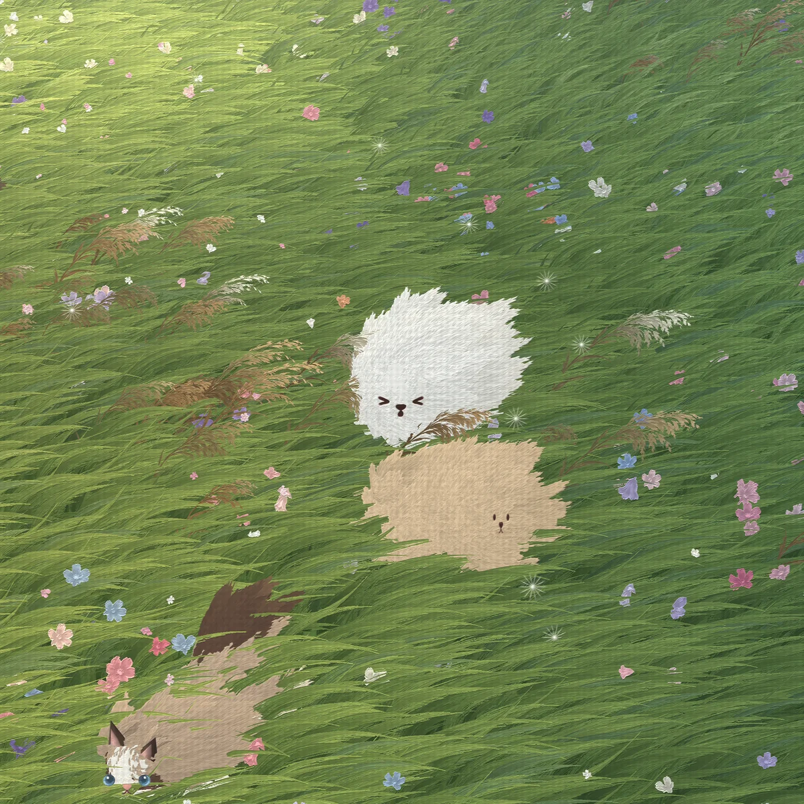

A Little White Dog
A moving oil painting: a little white dog in a windy meadow, every blade of grass and tuft of fur a brushstroke. Made with Three.js, it runs as a live desktop wallpaper, and the dog moves only when you click.
Open ↗
A moving oil painting: a little white dog in a windy meadow, every blade of grass and tuft of fur a brushstroke. Made with Three.js, it runs as a live desktop wallpaper, and the dog moves only when you click.
Open ↗